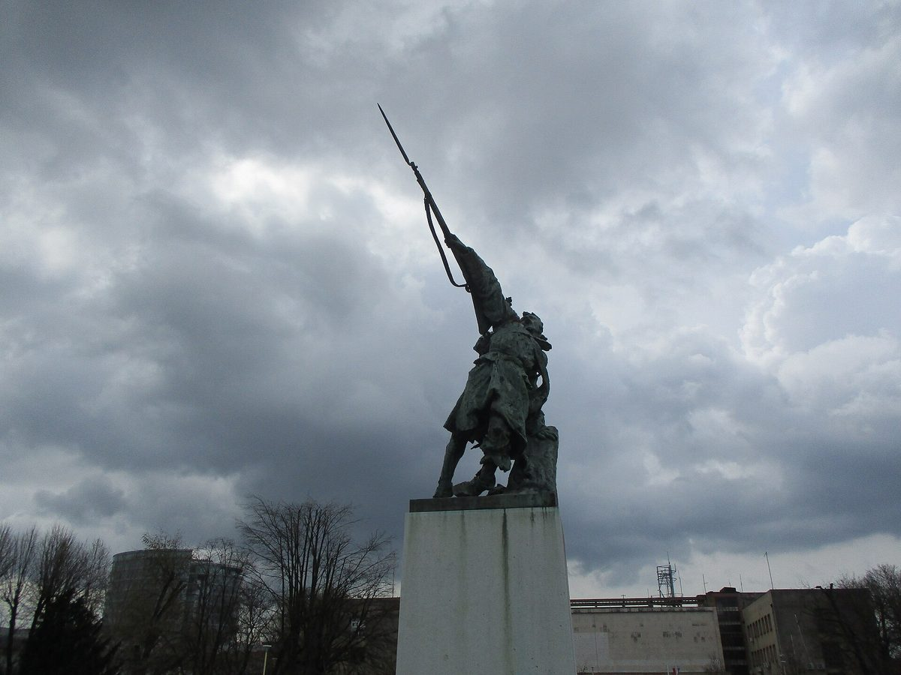

Osijek je tijekom Domovinskog rata pretrpio teška razaranja, brojne civilne i vojne žrtve te dugotrajnu opsadu i granatiranja, što je snažno obilježilo povijest grada.
Ratna zbivanja i početak agresije
Rat u Osijeku započeo je u ljeto 1991., kada je grad dospio u poluokruženje i postao jedna od ključnih meta velikosrpske agresije. Već 27. lipnja 1991. JNA je tenkovima ušla u grad, pucala na civile i pregazila poznati „crveni fićo“, simbol otpora Osječana.

Intenzivna granatiranja i napadi
Od srpnja do prosinca 1991. Osijek je bio svakodnevno izložen topničkim, minobacačkim i zračnim napadima.
- stambeni dijelovi grada
- bolnica
- industrijski pogoni
- crkve
- kulturne ustanove
Granatirani su:
Posebno težak napad dogodio se 3. rujna 1991., kada je ubijeno 14 osoba, a 28 ranjeno.
Žrtve i razaranja
Prema dostupnim podacima, u razdoblju od 1991. do 1994. u osječku bolnicu primljeno je 5.222 žrtava rata, od kojih je 954 poginulo. Uništeno je ili oštećeno između 15.000 i 20.000 objekata, a grad je pretrpio velika gospodarska i demografska oštećenja.
Život u opkoljenom gradu
Unatoč stalnim napadima, Osijek je ostao neokupiran zahvaljujući obrani hrvatskih snaga i stanovništva. Građani su živjeli u skloništima, uz česte prekide struje i vode, ali su gradske službe nastojale održati osnovne funkcije.
Razaranje infrastrukture i kulturne baštine
Na Osijek je tijekom rata palo više od 50.000 registriranih projektila. Teško su oštećeni stambeni objekti, bolnica, industrijski pogoni te povijesna jezgra gradu – Tvrđa. Kapucinska crkva, Osječka katedrala i brojni spomenici kulture bili su izravne mete. Unatoč golemim materijalnim štetama i naporima neprijatelja da zauzme grad, Osijek je ostao nepokoreni grad i ključna točka obrane istočne Hrvatske.

Sjećanje i komemoracije
Danas se Osijek redovito prisjeća svojih branitelja i civilnih žrtava polaganjem vijenaca i paljenjem svijeća, osobito na Dan svih svetih i Dušni dan . Spomenici poput „crvenog fiće“ čuvaju uspomenu na stradanje grada i hrabrost njegovih stanovnika.

Ako želite znati više kliknite ovdje.